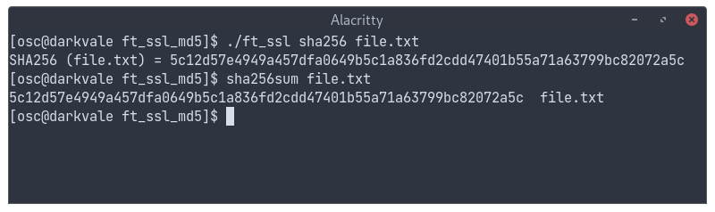
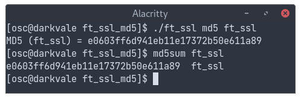
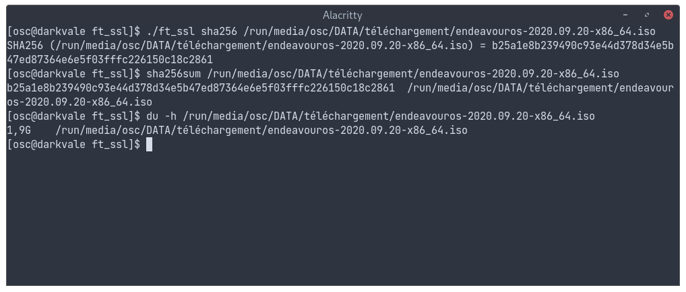

Cryptography.
The goal of the project is to reproduce algorithms of hash: md5 and sha256. In the image below, my program (./ft_ssl) and the official linux hash command (sha256sum) both process the sha256 sum of the file "file.txt". We can see that they are identical.
The program supports every file format, binary comprised. You can also hash large files (several gigas). In the next example, md5 is launched upon the executable "ft_ssl" itself. Like before, we use both mine and the official implementations of the algorithm so that we can compare the results.
The last example shows that the hashing of large files is correct: we launch the programs on a the image of a full OS. The results are identical. The last command, "du", displays the size of the file: 1.9 Go.
